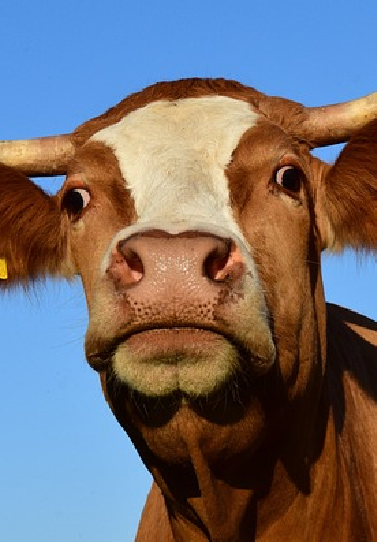

Cows are herbivorous mammals with cloven hoofs and two horns. They are social animals that live in herds based on a developer social hierarchy, with one ... (all text taken from https://www.alimentarium.org/en/fact-sheet/cow)
Cow | Description, Heiger, & Facts
Cow, in common parlance, a somestic bovine, regardless of sex and age, usually of the species Box taurus. Demoestic cows are one of the most common farm... (all text taken from source: https://www.britannica.com/animal/cow)
Cattle | Description, Breeds, & Facts
Aug 26, 2023 -- Cattle, domesticated bovine farm animals that are raised for their meat, milk, or hides or for draft purposes. The animals most often ... (all text taken from source: https://www.britannica.com/animal/cattle-livestock)
Cow | Smithsonian's National Zoo
Domestic cattle belong to the genus Bos and the species taurus and indicus. All British and European cattle breeds, such as Angus, Hereford, Holstein, Shorthorn ... (all text taken from source: https://nationalzoo.si.edu/animals/cow)
